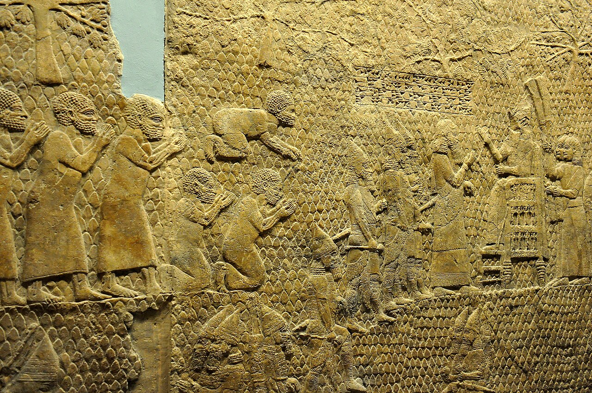

Lachish Reliefs

- Find Name
- Lachish Reliefs
- Historical Period
- Iron Age II
- Artifact Date
- c. 700-692 BC
- Date Discovered
- 1845
- Discovery Location
- Nineveh, Iraq (Palace of Sennacherib)
- Current Location
- British Museum, London
- Timeline Era
- Divided Monarchy
- Description
- A series of carved stone panels from Sennacherib's palace depicting, in vivid detail, the Assyrian siege and capture of Lachish in 701 BC, with battering ramps, archers, captives, and the king enthroned reviewing the spoil. The panels lined a single room as a visual war report.
- Biblical Significance
- These reliefs picture the very campaign described in 2 Kings 18, against Judah's second city, and excavations at Lachish have found the Assyrian siege ramp they depict. They help us feel the terror Hezekiah's generation faced, and therefore the size of God's deliverance of Jerusalem.
- Evidence Class
- Direct
- Interpretations
- Scholars agree the reliefs depict Sennacherib’s siege of Lachish in 701 BC; they are Assyrian palace propaganda, so the Judean side of the story comes from 2 Kings 18–19.
- Scripture Illuminated
- Related People
- Related Books
- Related Places
- Related Events
Awaiting Review Not yet checked against scholarly sources. Treat its claims as provisional until this entry is reviewed. About verification
Last reviewed: not yet reviewed